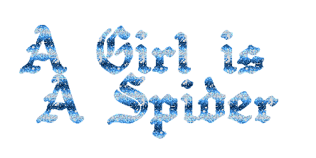
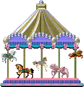
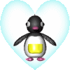
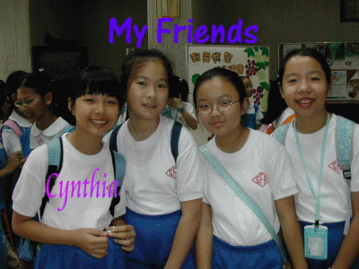
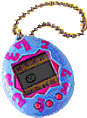
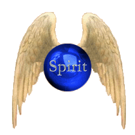

#justgirlythings
Club Penguin Times
chain mail

tag ur friends
webcam mirror

Tamatown
WeHeartIt
GirlsGoGames
music player

aboutweb.archive.org/agirlisaspider
the internet does not exist. i was there anyway.
windows media player
background music. it was always playing somewhere.
tumblr · #justgirlythings
trying to be findable. the early internet was a place you could be in without being categorised.
club penguin times
BREAKING: a place that existed has gone missing. witnesses report they were there. no evidence remains.
chain mail
Fwd: Fwd: READ THIS OR ELSE — the internet had a landlord and we didn't know.
facebook · tag ur friends
which one are you: the drifter / the 404 one / the mirror one / the noise defender
webcam mirror
we thought there were windows. it was made of mirrors.
tamatown
the object still exists. the town no longer loads.
weheartit
self-curated identity made of theoretical material.
girlsgogames
every path leads to the same theoretical argument.